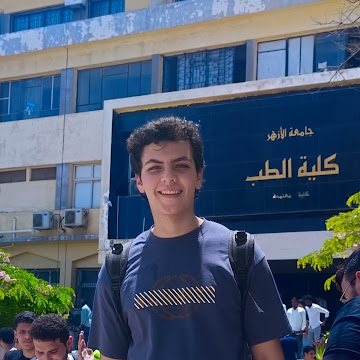

اللوح الطبي المدون لـ
د. يوسف النحاس
طبيب قيد التدريب | جامعة الأزهر
بإلهام من التصميم الفرعوني الأصيل، أُدون مسيرتي الأكاديمية على هذا اللوح الحجري. أكرس وقتي لفهم العلوم الطبية الأساسية، ودمج الفسيولوجيا وعلم الأمراض بالبحث العلمي الحديث لتقديم رعاية صحية راسخة.

سجل الحكمة والعلوم
جامعة الأزهر
طالب بالسنة الثالثة في كلية الطب البشري. دراسة مكثفة للعلوم الطبية الأساسية المؤهلة للعمل السريري.
أمراض القلب (Cardiology)
اهتمام بالغ بدراسة فسيولوجيا القلب والأوعية الدموية، والتخطيط الكهربائي (ECG).
البرديات والشهادات
السيرة الذاتية (CV)
سيتم نحت السيرة الذاتية المفصلة والجاهزة للتحميل هنا قريباً.
الشهادات والاعتمادات
مساحة مخصصة لإضافة الشهادات الجامعية، والدورات الطبية، والمؤتمرات.
المسار المهني السريري
التدريب وسنة الامتياز
سيتم تدوين سجل التناوب السريري (Clinical Rotations) والخبرات العملية.
العيادة الخاصة
مساحة مستقبلية لعرض تفاصيل العيادة، التخصص الدقيق، وحجز المواعيد.